1. コンピューター発展史概観
ここでは、歴史上のコンピューターや関連する事柄を取り上げて紹介します。コンピューターの発展は社会的背景や技術革新と密接に関わっており、その歴史を知ることで現在のコンピューターをより深く理解できます。
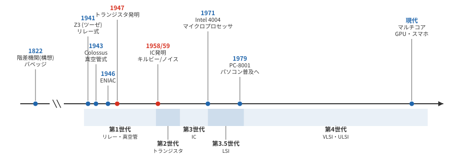
1.1. チャールズ・バベッジの解析機関
大航海時代になると、天文学と測量技術にもとづく船や陸地の正確な位置の測定が不可欠になります。その計算のためには大きな数の乗除算が必要でした。対数関数を用いると乗算と除算を、それぞれ加算と減算に変換できることから、17世紀に入ると、あらかじめ対数関数の値を計算した表（対数表）が出版されるようになります。この対数表は膨大な手計算により作成されしばしば計算間違いもありました。
19世紀英国の数学者チャールズ・バベッジは、自動的に対数表を作成するために、複雑な多項式を計算して印字する手回し式の歯車計算機械「階差機関（Difference Engine）」を考案し、1822年に王立天文学会でその構想を発表しました。翌1823年には政府資金を得て、6階の階差により10進20桁で計算する階差機関1号機の製作を開始しました。しかし、資金難や人間関係等により完成には至りませんでした。バベッジは後に、7階の階差により10進31桁で計算する改良版の階差機関2号機も設計しています。その後、ロンドンの科学博物館が残された設計図をもとに階差機関2号機の製作に取り組み、1991年にまず計算部分を完成させ（印字機構は2000年に完成）、実際に動くことが示されました。
-
-
かつて階差機関を展示していたコンピューター歴史博物館での映像, YouTube, 2016
-
バベッジは、階差機関をさらに発展させ、蒸気機関を動力源として歯車で動くコンピューター、解析機関（Analytical Engine）を設計しました。解析機関はそれまでの計算機械と異なる画期的な性質を備えていました。それはプログラミングができる仕組みです。それまでの計算機械は特定の計算に特化した専用機として制作されていました。しかし、解析機関はプログラムをパンチカードとして与えることによって、様々な計算を柔軟にできるようになる汎用性を備えていました。今の2進法に基づくコンピューターと異なり10進法を採用しており、40桁の数字を1000個蓄えることができる記憶装置を備えていました。解析機関の特筆すべき性質は、実機は存在していないものの、設計上はチューリング完全であると考えられている世界初のコンピューターだということです。 現在、解析機関を制作するためのプロジェクトも発足していますが、その実現までにはまだまだ時間がかかるようです。
| もし対象となる計算モデルが、チューリングが定義した計算モデルである万能チューリングマシンと同等の計算能力をもつとき、その計算モデルはチューリング完全であるといいます。現在、計算可能という意味において、チューリングの提唱した計算モデルを超える能力を持つモデルは知られておらず、チューリング完全は十分な計算能力をもつことの傍証となります。ここでの能力とは、速さや少ないメモリで計算できるといった観点は一切考慮しないことに注意してください。現実のコンピューターは記憶装置や時間の制約を受けますが、そういった制約は一切ないと仮定します。 |
詩人バイロンの娘エイダ・ラブレスは、バベッジに師事して解析機関上で動くプログラムを書いた史上初のプログラマとして知られています。実際のところは、バベッジが書いたプログラムのミスを修正したのだともいわれています(だとしても、世界最初のデバッガーの称号は与えられることになります)。彼女自身が記したプログラムも書簡としてのこされています。また、エイダは解析機関の自動作曲への応用にも言及するなど、人工知能研究にもつながる現代的な意味で計算の可能性を捉えていたといえます。エイダの名を冠したプログラミング言語Adaが1983年米国防総省によって規格化され、ボーイング社やエアバス社の航空システムを始めとする民間のシステムで現在も使われ続けています。
|
バベッジが設計した蒸気機関で動くコンピューターが実際に作られることはありませんでした。SFやファンタジーの中には電気よりも蒸気機関が高度に発達した世界を描く「スチームパンク」と名付けられたジャンルがあります。ヴィクトリア朝時代にバベッジの階差機関や解析機関が実現した世界と、プログラマとしてのエイダを描いたSFとして、「ディファレンス・エンジン」(ウィリアム・ギブスン, ブルース・スターリング, 1990年)と「屍者の帝国」(伊藤計劃, 円城塔, 2012年)、「エイダ」(山田正紀, 1994年)を挙げておきます。いずれもオススメです。 |
1.2. 第二次世界大戦とコンピューター
第二次世界大戦では、弾道計算や暗号解読といった目的のために、正確に大量の計算をするためのコンピューターが開発されました。戦争はコンピューターの発展を促す一要因でした。
- Zuse Z3
-
ドイツの土木工学者で設計技師のコンラート・ツーゼは1936年から数値計算のためにZ1〜Z4までの一連のコンピューターを作りました。Z3は1941年に戦闘機の翼の安定性に関する数値計算のために作られたリレー式のコンピューターです。リレーとは電磁石によりスイッチをオン・オフするスイッチです。Z3で使われたリレーの数は約2,600個、基本動作周波数は5.3Hzで、2進法により22ビット長の浮動小数点を扱うことができました。穿孔フィルムに書かれたプログラムを読み取りプログラミング可能でした。当時はまだ現代のような汎用コンピューターの概念は確立していませんでしたが、Z3は後にチューリング完全性を持つことが証明されています。
|
ツーゼはこの宇宙がコンピューターによって計算された世界であるという説を1969年に著書「計算する宇宙」で発表しています。今日では、シミュレーテッド・リアリティやデジタル物理学として知られる仮説であり、SFでもポピュラーなアイデアです。この題材を扱った作品として、映画では「マトリックス」(1999年)、「13F」(1999年)、小説では「神は沈黙せず」(山本弘, 2003年)などがあります。他にもこのテーマを扱った映画や小説は多数ありますが、ここで紹介すること自体が重大なネタバレになってしまいますので、これ以上は言及しないことにします。 |
- Colossus
-
英国がドイツ軍の暗号解読のために1943年に開発した世界初のプログラム可能な電子式デジタルコンピューターです。約1600本の真空管を使用し、紙テープから毎秒5000文字(1文字5ビットで25,000ビット相当)を読み取って処理する能力を持っていました。1944年に稼働した Mark II では、5つの処理を並列に行うことで実効的な処理性能が約5倍(毎秒25,000文字相当)に向上しています。特定の暗号解読タスクに特化した専用機でした。第二次世界大戦の機密情報であったため、その存在は戦後30年近く秘密とされました。
- ENIAC
-
米国で弾道計算の数値計算のためにペンシルバニア大学のジョン・モークリーとジョン・プレスパー・エッカートにより設計され、1943年から製作が始まり、1946年に公開されました。当時、人手で20時間かかった弾道計算はENIACにより、30秒に短縮されました。10進法を採用しており、1秒間に5000回の加減算ができました。17,468本（約1万7千本超）の真空管が搭載され、総重量は27トン、消費電力は150kWの規模でした。ENIACはプログラム内蔵型ではなく、プログラムは配線パネルを物理的に接続することで行われました。
|
水爆開発のための物理シミュレーションの過程でコンピューター上で計算によって発生させた疑似乱数を用いたアルゴリズム「モンテカルロ法」がスタニスワフ・ウラムらにより開発され、フォン・ノイマンとその同僚のニコラス・メトロポリスらによってENIACに実装されました。モンテカルロ法は現在、物理計算だけでなく、人工知能分野でも欠かせない計算技術として広く使われています。特に深層学習での確率的最適化やベイズ推論で重要な役割を果たしています。 モンテカルロ法の名は、カジノで有名なモナコ公国の地区名からとられたもので、メトロポリスによる命名といわれています。 |
- EDVAC
-
ENIACの設計に引き続き、モークリーとエッカートは新しいコンピューターEDVACの開発に着手します。従来のコンピューターでは計算方法を指示するプログラムは配線やスイッチの設定で与えられていました。EDVACの設計は計算の途中結果を記録しておくための記憶装置を計算法を指示するプログラムの格納にも用い、プログラムも記憶装置上のデータとして扱う点が画期的でした。 この方式はプログラム内蔵方式と呼ばれています。EDVACでは2進法も採用されました。これにより現代コンピューティングの基礎となる「プログラムとデータを同じメモリに格納する」という概念が確立しました。
|
EDVACの開発に遅れて加わったフォン・ノイマンは EDVAC の論理設計を計算データと同様にプログラムもデータとして同じ記憶装置に格納する「プログラム内蔵方式」として明確に整理し、内部報告書として提出しました。これが、ノイマンの単著文書として外部にも公開され今日のコンピューターアーキテクチャの基礎となり、プログラム内蔵方式によるコンピューター設計は「ノイマン型アーキテクチャ」と呼ばれることになります。 EDVAC設計の報告書が当時既に著名であったノイマンの単著として公開されてしまったことや、ペンシルバニア大学との特許権の問題により、モークリーとエッカートは開発から離脱してしまいます。中心的な開発者が離脱したことからEDVACの開発は遅れ、完成したのは設計を提案した1944年から7年後のことでした。 |
- FACOM128
-
日本では富士通が1954年にリレー式コンピューターFACOM100を完成させ、これに続いて1956年には商用機FACOM128Aを実現しました。
-
-
60年前のコンピューター、動かし続ける「守人」浜田忠男さん, 朝日新聞, YouTube, 2019
-
-
- FUJIC
-
レンズ設計に必要な数値計算のために、富士写真フイルム(現富士フイルム)の技術者岡崎文次により設計・製作された日本初の本格的な真空管式のコンピューターです。FUJICは1949年に開発が始まり、1956年に完成しました。
-
FUJIC製作の経緯やFUJICの設計については岡崎文次本人による以下の解説論文で読むことができます。
-
FUJICの逸話をもとにした漫画を読むことができます。
-
1.3. コンピューターハードウェアの発展
デジタルコンピューターは、オン・オフの役割をはたすスイッチ回路（論理演算素子）の集積化・省電力化・低コスト化の歴史と重なります。
- 第1世代コンピューター
-
論理演算素子にリレー、または真空管がつかわれているコンピューターです。真空管によるENIACやリレーによるFACOM128は第1世代コンピューターです。大型で消費電力が大きく、信頼性にも問題がありました。
- 第2世代コンピューター
-
1947年にショックレー、バーディーン、ブラッテンらによってトランジスタが発明され、論理演算素子として使われるようになりました。トランジスタは、電気の流れを制御するスイッチのようなものだと考えてください。このスイッチは、「ON」（電流を流す）と「OFF」（電流を遮断する）の2つの状態を持っています。コンピューターのプロセッサは、膨大な数のトランジスタを組み合わせて構成されており、これらのトランジスタを高速で切り替えることで計算を行っています。トランジスタの登場により、コンピューターは大幅に小型化、低消費電力化されました。
- 第3世代コンピューター
-
複雑な回路を小型化する集積回路(IC)は、1958年にテキサス・インスツルメンツ社のジャック・キルビーによって発明され、1959年にはフェアチャイルド社のロバート・ノイスも独立に量産に適したプレーナ型のICを発明しました。ICは1960年代半ばからコンピューターの論理演算素子の集積化に広く用いられるようになりました。IBMシステム360は、この世代を代表するコンピューターです。
- 第3.5世代コンピューター
-
大規模集積回路(LSI)を用いたコンピューターです。LSIは1つの集積回路の中に1000素子以上を集積した集積回路です。1970年代には、コンピューターの小型化によって、パーソナルコンピューターが誕生しました。（当時はマイクロコンピューターを短縮してマイコンと呼びました。）1971年に世界初となる1チップのICマイクロプロセッサ Intel 4004 が開発されます。Intel 4004はビジコン社がプログラム制御による電卓の小型化と省電力化を目的として、インテル社と共同開発したものです。開発陣には、インテルの技術者テッド・ホフ、スタンレー・メイザー、フェデリコ・ファジンらとともに、顧客会社であるビジコン社の嶋正利が加わっており、実際には論理設計のほとんどは嶋が手掛けたとも言われています。
Intel 4004には2300個のトランジスタが1チップのICに組み込まれており、4ビットの数の加算が1秒に10万回行えました。ENIACと4004では扱う桁数や命令が違うため、加算の回数だけで性能を同一視することはできません。それでも、部屋を占めた計算装置から小さな半導体チップへという変化は、集積化の効果をよく示しています。
ICによるコンピューター開発の発展により、日本では1979年にNECからパーソナルコンピューターPC-8001が発売され、一般家庭でもコンピューターを所有する時代になっていきます。 - 第4世代コンピューター
-
大規模集積回路(LSI)をさらに高密度化して1つの集積回路に10万素子以上の素子数を集積した超大規模集積回路(VLSI)や、100万素子以上を集積した超々大規模集積回路(ULSI)を用いたコンピューターです。メインフレームやスーパーコンピューターなど高性能コンピューターの発展と、パーソナルコンピューターの急速な普及が特徴です。
ビジネスの観点からは、第3.5世代と第4世代の主な違いは、コンピューターの用途や市場の広がりにあると言えます。第3.5世代では、LSIの登場による小型化・低価格化でパーソナルコンピューターが誕生し、コンピューターは専門家や大企業だけの道具から個人でも手軽に購入できる一般消費者向けの製品へと変化しました。続く第4世代では、VLSIによるさらなる高性能化・高機能化によって、パーソナルコンピューターの普及が進むと同時に、ワークステーションやスーパーコンピューターも登場し、ビジネスや科学技術など専門的な分野での活用が広がりました。
|
まだ Windows も macOS もない頃のパソコンは、一般家庭でどのように使われていたのでしょうか。上で紹介したPC-8001のような当時のパソコンは、電源をいれるとブラウン管モニタの黒い画面上にカーソルがチカチカと点滅しているだけでした。 パソコンを使うには、自分でBASIC言語や機械語を使ってプログラムを組むか、カセットテープやフロッピーディスクに入っているプログラムを読み込ませるしかありませんでした。 1980年代は今よりも多様なパソコン雑誌が出版されていて、そこにはたくさんのゲームプログラムのコードが掲載されていました。プログラムがわからない人でも、ゲームをしたい一心でプログラムを写経して遊んでいました。中高生や大学生が中心的な購買層のパソコン雑誌にコンピューターの動作原理や様々なアルゴリズム等の解説記事が掲載されていました。このような媒体を通して自然とプログラムを覚えた人が多かった時代です。 当時は、パソコンをゲームやプログラミングを楽しむやや高価な趣味の機械として購入する層と、ワードプロセッサ(ワープロ)を使うために購入する層がほとんどであったと思います。並行して、1978年に登場したワードプロセッサ専用機が1985年ごろに個人でも買える価格帯に降りてきて、2000年代初頭まで発売されていました。 |
第4世代より後は、コンピューターのハードウェアを世代によって分類することはなくなりました。
|
第五世代コンピューターは？ 1982年通産省（現在の経産省）による国家プロジェクトである「第五世代コンピューター」プロジェクトが立ち上げられます。当時は人工知能の第2次ブームのまっただ中で、プロジェクトの目標として、人工知能のための並列コンピューターの開発とプログラミング言語の開発等が掲げられました。10年計画・総額約540億円（570億円とする資料もあります）の規模で、当時世界最大規模の人工知能研究プロジェクトであり、日本が世界をリードした取り組みでした。プロジェクトの発表は欧米の人工知能研究者たちにも衝撃を与え、世界中の注目を浴びました。 このプロジェクトの中核として採用されたプログラミング言語が、当時ヨーロッパを中心に人工知能研究のための言語としても脚光を浴びていた論理型言語 Prolog でした(Prolog は IBM の人工知能ワトソンでも質問解析のパターンマッチング等に使われました)。 現在の第3次人工知能ブームを牽引している統計的機械学習や深層学習と異なり、当時は論理的推論を基盤とした人工知能研究が主流でした。現在のブームと決定的に異なるのは、「役に立つ」わかりやすい応用がプロジェクトの成果物として得られなかったことです。 私が人工知能研究にはじめて携わった頃には、すでに第2次人工知能ブームは終焉にさしかかり、長い冬の時代を迎えようとしていたころでした。 「第五世代コンピューター」を謳ったプロジェクトで、第5世代として世に受け入れられるコンピューターが成果物として現れなかったこと、このプロジェクトがハードウェアの発展とは外れた形で第五世代を名乗ったことなどが要因になっているかどうかは定かではありませんが、第4世代以降は世代によるコンピューターの分類はみられなくなりました。 |
1.4. 現代のプロセッサ技術
現代のプロセッサ技術は、単純な集積度の向上だけでなく、様々な方向に進化しています。
- マルチコアプロセッサ
-
単体のプロセッサの性能向上が物理的限界に近づく中、複数の処理コア（演算装置）を1つのチップに搭載するマルチコア化が進みました。現在の家庭用PCやスマートフォンでは、6コア、8コア、10コア以上のプロセッサが一般的になっています。2026年時点では、Apple M5 Maxプロセッサは18コアCPU（6スーパーコア+12パフォーマンスコア）と最大40コアGPUを搭載しています。Intelは2026年1月にCES 2026でIntel 18Aプロセスを用いた Core Ultra Series 3（開発名 Panther Lake）を発表し、最大16コアCPUを搭載しています。
- GPU（Graphics Processing Unit）
-
元々はグラフィックス処理のために開発されたプロセッサですが、その並列処理性能が注目され、現在では人工知能の深層学習計算など、様々な高性能計算に利用されています。NVIDIAは2024年3月に発表したBlackwell世代のB200を2024年末より量産し、2026年時点では深層学習計算の中核を担っています。B200は2つのダイを組み合わせた構成で2080億個(208 billion)のトランジスタを集積し、NVIDIAの公開仕様では最大180GBのHBM3eメモリを備えます（当初発表時の192GBという値と区別します）。2025年後半からは同じBlackwellアーキテクチャを拡張したBlackwell Ultra (B300) のシステムが出荷開始され、2026年初頭にはB300単体GPUの提供も始まりました。B300はHBM3eを288GBに拡張し、AI推論向けに性能を強化しています。
- 専用プロセッサ
-
特定の計算に特化した専用プロセッサも増えています。GoogleのTPU(Tensor Processing Unit)やAppleやIntelのNPU(Neural Processing Unit)などは、AI計算に特化したプロセッサです。これらは特定の演算を非常に効率的に処理できるよう設計されています。
- エッジコンピューティング
-
従来はクラウドサーバーで行われていた処理を、データ発生源に近いエッジデバイスで通信負荷を低減して処理する「エッジコンピューティング」のための低消費電力・高性能プロセッサも発展しています。自動運転車やIoTデバイスなどで重要な役割を果たしています。
- 量子コンピューティング
-
古典的なビットの0と1の二値ではなく、量子ビット（qubit、キュービット）を用いた量子コンピューターの研究開発も進んでいます。量子ビットは重ね合わせと量子もつれという量子力学的な性質を利用し、特定の問題(暗号解読、分子シミュレーションなど)では従来のコンピューターを圧倒的に上回る性能を発揮する可能性があります。IBM、Google、Rigetti、IonQなどが実用化に向けて競争しています。日本も産学官で実用化に向けた開発を進めています。
1.5. ムーアの法則とその限界
インテルの創業者の1人ゴードン・ムーアは1965年に発表した記事で、これまでのデータから集積回路の集積密度は1975年まで一年ごとに倍になると予想しました。後に「ムーアの法則」と呼ばれるこの予測は、約2年で倍になるペースに修正されながらも、2010年代まで驚くべき精度で実現されてきました。実際のデータに基づいてプロットした結果が以下のグラフです（横軸は西暦、縦軸はチップあたりのトランジスタ数、縦軸は対数であることに注意）。
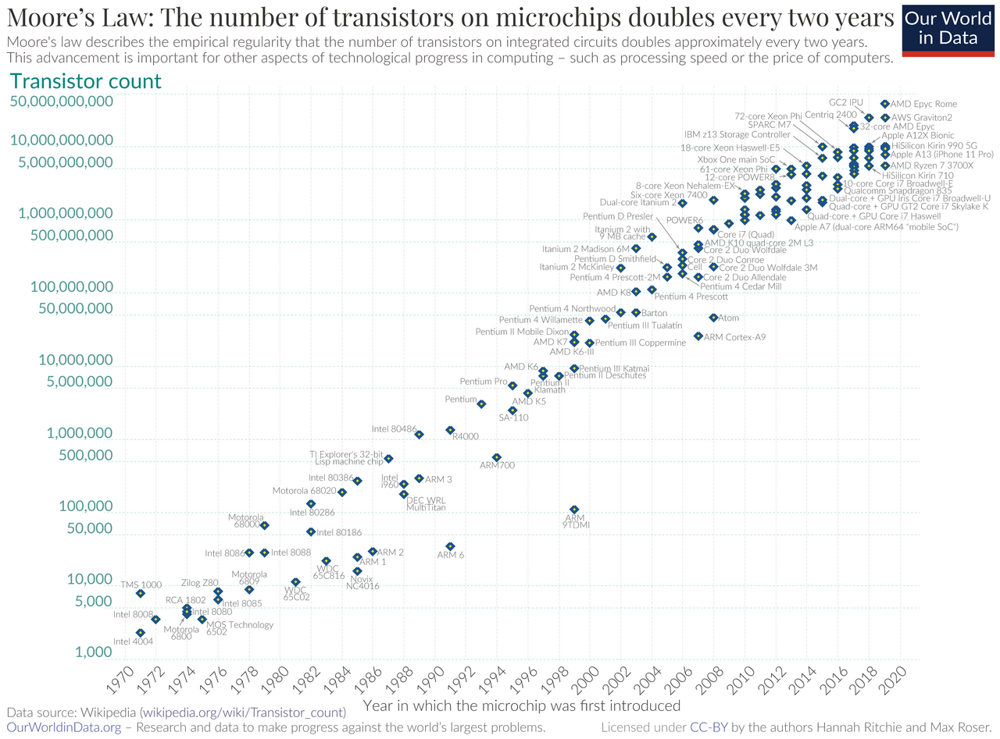
指数的な増加は、我々の一般的な感覚を超えた値の爆発的な増加を意味しています。米粒とチェス盤の逸話では、チェス盤（64マス）の1マス目に1粒、2マス目に2粒、3マス目に4粒と、次のマスに倍の米粒をおいてゆくと、64マス目は、何粒になるかという問題が扱われています。64マス目に置かれる米粒は 263 ≈ 9.2×1018粒、チェス盤全体の合計では 264−1 ≈ 1.8×1019粒となります。この合計は、世界の米の年間生産量の概算2.5×1016粒の約700年分に匹敵する量になります。
|
264の概算: 10進法で何桁くらいになるかを知りたいときには、以下の方法で十分です。 103 ≈ 1024 = 210 を使うと、2 ≈ 100.3 より、264 ≈ (100.3)64 = 1019.2 と概算できます。または、264=(210)6×24 ≈ (103)6×16 = 1.6×1019 と概算すればもう少し精度が上がります。 |
回路の集積密度の指数的な発展を予測したこの法則がこれまで実現されてきたことは驚異的なことです。集積密度の増加は、コンピューターの速度向上、価格低下、消費電力低下、メモリ容量増大に直接影響する要素です。
-
性能の向上：トランジスタ数が増えると、より多くの計算を同時に処理でき、プロセッサの性能が向上する
-
省電力化：トランジスタのサイズが小さくなると、動作に必要な電力が減少する
-
小型化：同じ性能のプロセッサをより小さなサイズで製造できるようになる
ムーアの法則の限界と「More than Moore」
近年、従来の技術でトランジスタの微細化を続けることが難しくなり、ムーアの法則が限界に近づいていると言われています。2025年までの商用プロセスは3nm（ナノメートル）が先端でしたが、TSMCは2025年第4四半期より2nmプロセス（N2）の量産を開始し、Samsungも2025年末に2nmプロセスによる Exynos 2600 を発表しました。TSMCの2nmプロセスでは、従来のFinFET構造に代わり、ゲートが導電部分を四方から囲むGAA（Gate-All-Around）構造のトランジスタが採用されています（Samsungは3nm世代(2022年)からGAA構造を採用しています）。また、Intelは2026年1月、同社の先端プロセスである Intel 18Aを採用したCore Ultra Series 3 を発表しました。 なお、2nmや18Aは製造プロセスの世代を表す名称です。トランジスタの各部がその数値の寸法になっているわけではなく、異なるメーカーの性能をこの名称だけで比較することもできません。
一方、iPhone 17 Pro/Pro Max（2025年9月発売）に搭載されている 演算装置（プロセッサ） である Apple A19 Pro は、TSMCの3nmプロセス（N3P）を採用しています（1nmは10億分の1メートル: 10-9メートル）。製品への採用時期は、プロセスの量産開始時期とは別に考える必要があります。
新型コロナウイルスの直径が約60〜140nm（平均約100nm）、光学顕微鏡で見える限界の大きさが200nm、半導体素子を構成するシリコン原子の直径が約0.2nmですので、その小ささがわかると思います。回路がこのレベルまで微細化すると、量子力学におけるトンネル効果で電子が漏れ出すことなどからリーク電流による電力消費が無視できない量になります。
このような物理的限界に対処するために、業界は「More than Moore」という考え方を採用しています。これは単にトランジスタの数を増やすだけでなく、以下のような方向性での進化を目指しています。
-
3次元積層技術：チップを縦方向に積み重ねる技術(3D-NAND、3Dパッケージングなど)
-
新材料の採用：シリコン以外の材料(GaN、SiCなど)の使用
-
新しいトランジスタ構造：FinFET（2020年代前半の主流）、GAAFET（Gate-All-Around FET、2nm世代で本格採用）、そして裏面電源供給（Backside Power Delivery: 配線層を表裏に分離する技術）など
-
専用チップ(ASIC)の開発：特定の用途に最適化された専用チップの開発
-
異種統合：異なるタイプのチップを1つのパッケージに統合する技術
近年では、単体の演算装置の性能向上が頭打ちになってきたことから、複数の演算装置を搭載したマルチコア化で並列処理を行うことによる高速化が進められています。また、GPUやTPUなどの専用プロセッサの活用が進んでいます。
|
なお、ここではアナログコンピューターについてはふれませんでした。アナログとデジタルの本質的な違いについては、各自考えてみてください。 アニメーション「風立ちぬ」（宮崎駿監督）に主人公が戦闘機を設計するシーンで計算尺がでてきます。計算尺はあらかじめ対数の目盛りをふった定規を組合せて、乗算をするための道具です。目盛の間の値は目分量で読み取るためにアナログ計算器に分類されます。一方でそろばんは、縦に1+4個並んだ珠をはじいて珠の状態のみを用いて計算するため一種のデジタル計算器といっていいでしょう。 |
2. データ量の単位
2.1. ビットとバイト
前回確認したように、現在のデジタルコンピューターはスイッチのオン・オフ、電圧の高・低といった2つの異なった状態に基づいて設計されています。そのため、データの容量や通信量を表す単位として、0と1のみを用いた数の表記法である2進法に基づいた単位、ビットとバイトを用います。
- ビット(bit: binary digit)
-
データの最小単位。2進法による数表現の1桁分(0または1)のデータ量を表します。単位記号として小文字のbを用います（8ビット=8b）。（今後の授業で触れる情報量の単位としてもビットを用いますが、定義は異なります。）
- バイト(byte)
-
2進法の数表現で8桁、つまり8ビット分のデータ量を1バイトといいます。単位記号として大文字のBを用います（8b=1B）。
|
歴史的にはアルファベットや数字等の1文字を表現するのに用いたビット数を1バイトと呼んでいました。そのため、かつては1バイトが6ビットや9ビットとなるコンピューターも存在しました。正式に国際規格(IEC 80000-13)により1バイトが8ビットと定義されたのは2008年のことです。 |
数字の0から255までの256種類の数を表現するために、2進法では 28=256 であるから8桁、つまり8ビット必要です。n進法や基数、16進法で 0〜9 と A〜F の16種類の記号を使うこと、基数を右下の括弧で示す 1010(2) のような表記については、前回の確認問題で復習したとおりです。忘れている人は、第1回の資料か補足資料 2進法の表記と変換 に戻ってください。
2.2. 前回の確認問題の解答
解答
(1) 10100010(2) = 1×27 + 0×26 + 1×25 + 0×24 + 0×23 + 0×22 + 1×21 + 0×20 = 162
(2) 10100010(2) = 1010 0010(2) = A2(16)
(∵ 1010(2)=10=A(16) かつ 0010(2)=2=2(16))
(3) 201 を商が 0 になるまで順に 2 で割り、得られた余りを下から順に並べる（下の表参照） 11001001(2)
(4) 11001001(2)=1100 1001(2) = C9(16)
(5) 20A(16) = 0010 0000 1010(2) = 10 0000 1010(2)
(6) 2×162 + 0×161 + 10×160 = 522
(7) 0.1111(2) = 1 - 2-4 = 0.9375 (∵ 0.1111(2)+0.0001(2)=1)
余り |
|
201 ÷ 2 = 100 |
1 |
100 ÷ 2 = 50 |
0 |
50 ÷ 2 = 25 |
0 |
25 ÷ 2 = 12 |
1 |
12 ÷ 2 = 6 |
0 |
6 ÷ 2 = 3 |
0 |
3 ÷ 2 = 1 |
1 |
1 ÷ 2 = 0 |
1 |
表 1の計算で、10進法から2進法への変換ができる理由も理解しておいてください。たとえば、10進法の数 12345 を 10 で割り続ければ、余りとして、5, 4, 3, 2, 1 がでてきますので、逆順にならべれば 12345 となります。10進法で考えれば当たり前のことですが、10進法から2進法への変換でも同じことをしているに過ぎません。
|
2.3. 大きな量を表す接頭辞
一般に、メモリの容量やデータ通信量は膨大な値になるため、桁が大きくなってしまいます。そのため「キログラム」の「キロ」のように、単位グラムの前に大きな量を表す語（接頭辞（prefix））を用います。国際単位系（SI）では1キロは1000を表します。一方で、半導体メモリ等、もともと内部で2進法に親和性の高い設計を行っている対象では、1キロは 210=1024を表すのが一般的です。各々、同じ記号では混乱するために、国際電気標準会議によって、1998年に2進法に基づく接頭辞については、従来と異なる記号を割り当てました。
| 国際単位系(SI) [10進接頭辞] | 国際電気標準会議(IEC) [2進接頭辞] | |||||||||||||||||||||||||||||||||||||||||||||||||||||||
|---|---|---|---|---|---|---|---|---|---|---|---|---|---|---|---|---|---|---|---|---|---|---|---|---|---|---|---|---|---|---|---|---|---|---|---|---|---|---|---|---|---|---|---|---|---|---|---|---|---|---|---|---|---|---|---|---|
|
|
接頭辞は、103 ≈ 1024 = 210 より、指数部は10進接頭辞は3の倍数、2進接頭辞は10の倍数で記号の対応をとります。2022年の国際度量衡総会(CGPM)では、SI接頭辞として新たに1027を表すロナ(R)と1030を表すクエタ(Q)が追加されました。対応する2進接頭辞ロビ(Ri)とクエビ(Qi)は、2025年改訂の国際規格IEC 80000-13で追加されました。
|
なぜキロ(k)は小文字なのか？ SIでは、106(メガ)以上を表す接頭辞に大文字、103(キロ)以下を表す接頭辞に小文字を用いる規則になっています。そのため k(キロ)のほか h(ヘクト)、da(デカ)、d(デシ)、c(センチ)、m(ミリ)もすべて小文字です。2進接頭辞の Ki が大文字ではじまるのは、この規則の対象外だからです。 |
|
接頭辞に使われている言葉の由来(諸説あり)
メガからテラまでは巨大さを形容する表現が語源に用いられていましたが、ペタ以降はやる気を失ったように1000の指数を表すだけになり、いずれもギリシャ語やラテン語の単語に由来しています。さすがに、「大きい」、「超巨大」、「モンスター」と、だんだん表現がインフレをおこしてしまい諦めたのでしょう………。 最近になって、超大規模なデータや計算が必要となり、新たに「ロナ」と「クエタ」が追加されました。現在の大規模言語モデル（LLM）は数百テラバイト〜数ペタバイトのデータでトレーニングされているといわれています。 ちなみに、googleの語源となった googol は、10100 を表しています（標準化された単位系ではありません）。 |
2.4. 二種類の接頭辞による混乱
コンピューターシステムにおいて、メモリ容量を表す際にはKBなどの接頭辞が2進接頭辞(1KiB = 1024バイト)の意味で使われるのが一般的です。メモリについては表記も1KiBや1kBではなく1KBが使われています。これには以下のような技術的・歴史的背景があります。
-
コンピューターアーキテクチャの特性：コンピューターは2進数で動作するため、メモリアドレスなどは2のべき乗（210 = 1024）で効率的に処理されます。
-
メモリ製造の効率性：半導体メモリは製造工程の特性上、2のべき乗単位で設計されることが効率的です。
-
アドレス指定の効率性：メモリへのアクセスは2進数のアドレス指定で行われるため、2のべき乗単位のほうが合理的です。
一方、ストレージデバイス(HDDやSSD)の容量表示では、メーカーは一般的に10進接頭辞（1kB = 1000バイト）を使用します。これにより、同じ物理容量でも数値が大きく見えるというマーケティング上の利点があります。
10進接頭辞と2進接頭辞を区別するために異なる記号が割り当てられたにも関わらず、ほとんど普及していません。
桁が大きくなるに従って、2進接頭辞と10進接頭辞の値の差は指数的に大きくなってゆきます（下図）。
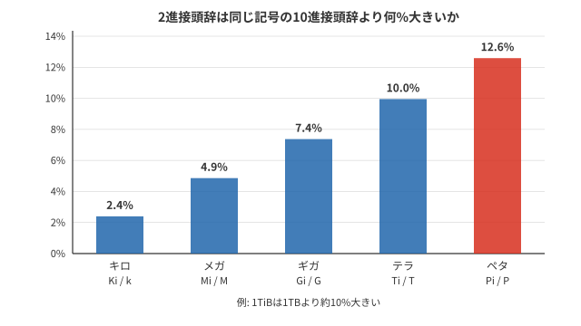
また、半導体メモリの仕様を策定している半導体の業界団体JEDECのメモリ標準では、K(大文字), M, G, T といった記号を2進接頭辞として用いることを許容しています。
ようやく冒頭で示した問題に取り組む準備ができました。
Windows11で補助記憶装置であるハードディスクの容量を表示しました（下図）。 「使用領域」、「空き領域」、「容量」のそれぞれについて、バイトで書かれた値が GB表示された値とほぼ一致していることを確認してください。
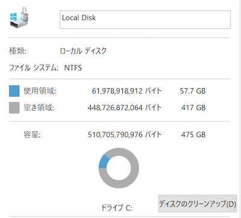
実際に計算してみると以下のように確認できます。
-
61.98 ×109 B / 230 ≈ 57.72GiB (Windowsの表示は57.7GB)
-
448.7 ×109 B / 230 ≈ 417.88GiB
(Windowsの表示は417.8GBなので、四捨五入ではなく切り捨てで表示していることがわかります)
もう1つWindows11でファイルサイズを表示しました（下図）。バイトで書かれた値がMB表示された値とほぼ一致していることを確認してみてください。
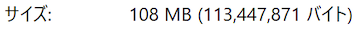
これについても、たしかに次のように確認できます。
-
113.4 ×106 B / 220 ≈ 108.1MiB (Windowsの表示は108MB)
さらにややこしいことに、Windows と macOS (10.6以降) ではファイル容量表示の流儀が異なるのです。macOSでは、図 8と同じファイルを Finder という標準ツールで表示すると、図 9のように表示されます。図 8のバイト数と見比べると、10進接頭辞になっていることがわかります（ただし、K は大文字になる）。
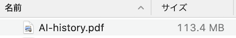
以下の表 4に、ツールや記憶媒体ごとの領域・サイズの表示方法をまとめました。2進と10進の接頭辞が混在していることがわかります。
| 対象 | 容量・サイズの表示方法 |
|---|---|
Windowsエクスプローラー |
2進接頭辞 |
macOS Finder |
10進接頭辞 |
補助記憶装置 HDD/SSD の容量 |
10進接頭辞（販売時の表示） |
主記憶装置（メインメモリ） |
2進接頭辞（販売時の表示） |
USBフラッシュメモリ |
10進接頭辞（販売時の表示） |
CD-R |
2進接頭辞（販売時の表示） |
DVD-R |
10進接頭辞（販売時の表示） |
BD-R |
10進接頭辞（販売時の表示） |
ファイルのサイズは10進接頭辞を用いる macOS でも、主記憶装置の容量表記はJEDECの標準に従って2進接頭辞を用いています。
メモリ空間のはなし
今日の一般的なコンピューターは、内部で一度に処理できるデータの単位が64ビットであり、それにともなって、高速に計算できる整数や実数(の近似表現)は64ビットで表現されます。
第3.5世代のIntel 4004プロセッサは、4ビットが一度に処理できるデータの単位でした。その後、8ビット、16ビット、32ビットとハードウェアの発展にともなって一度に扱えるデータ単位が増加し、現在は64ビットになっています。
この一度に扱えるデータ単位は、コンピューターが扱えるメモリ空間にも影響を与えます。今のコンピューターは、メモリ上のデータの位置を1バイト単位で指定するのが一般的です。このような仕組みをバイトアドレッシングといいます。
かつての32ビットをデータ単位とするコンピューターでは 232=230+2=22×230=4GiB から、4GiBのメモリ空間が一度に扱える上限でした。今の Windows 11 は少なくとも4GiBのメモリが必要で、8GiB以上が推奨されていますので、32ビットでは対応できません。64ビットで扱えるメモリ空間は、264 ですので、16EiB(エクスビバイト)という広大な空間になり、現在のところ64ビットで十分です。また、64ビットの整数はほとんどのアプリケーションにとっても十分な大きさです。
仮想メモリとページング
コンピューターが扱うメモリ空間は物理的なメモリ（RAM）だけではありません。現代のオペレーティングシステムは仮想メモリという技術を使っています。これは物理メモリよりも大きな論理的なメモリ空間を提供するもので、実際には補助記憶装置の一部をメモリの拡張として使用しています。
この仕組みでは、メモリ空間を固定サイズの「ページ」に分割し、必要なページだけを物理メモリに読み込みます（ページング）。使用頻度の低いページは補助記憶装置（ページファイル/スワップ領域）に退避させます。このページングは現代のコンピューターでは非常に重要な技術です。
64ビットアドレス空間では理論上は16EiBという膨大なメモリを扱えますが、実際のアーキテクチャではこれよりも小さな空間（例えば256TiBなど）を実装していることが一般的です。これは、フルの64ビットアドレスを扱うことによるオーバーヘッドを避けるためです。
2.5. データ量
テキストデータ
コンピューター内では、文字に割り当てられた数値を並べることによって、テキストデータを表現します。コンピューターに用いる文字の集まりに、数値を割り当てる規則を文字コードといいます。文字コードは、歴史や地域性を抱えて発展してきたため、多種多様であり、非常に複雑（汚い）です。1文字あたり必要になる領域は文字コードによって異なります。この授業では、現在、プログラミングやWebページでもっとも標準的に用いられる文字コードである UTF-8 を用いることにします。UTF-8では、英数字1文字に1バイト、平仮名や漢字のほとんどに1文字あたり3バイトの数値を割り当てています。改行や空白も文字としてカウントします。
| 作品 | データ量 |
|---|---|
「人間失格」のテキスト |
日本語 約7万7千5百文字, 229kB |
「赤毛のアン（Anne of Green Gables）」のテキスト |
英語 約59万1千文字, 591kB |
ライトノベル「本好きの下剋上」のテキスト |
日本語 約620万文字, 約17.8MB |
GPT-5のトレーニングデータ |
非公表(数十兆〜100兆トークン・数百TB規模と推定されている) |
現在主流のUTF-8のような文字コードは、文字の種類によってコード長が変化するため、文字数から単純にデータ量が計算できません。ただし、英語テキストの場合は、UTF-8でもほとんど1文字1バイトの対応がありますので計算が簡単です。
新型コロナウイルス（SARS-CoV-2）はRNAウイルスであり、その設計図となるゲノムはA,C,U,Gの4種類の文字が29903個並んだ文字列とみなせます。文字は4種類なので、22=4より1文字あたり2進法で2桁の数字、すなわち2ビットで表現できます。(例: A=00, C=01, U=10, G=11)
つまり、新型コロナウイルスのゲノムデータ量は
29903(文字)×2(b/文字)=59806(b)≈7.5kB
となります。
比較として、ヒトのゲノムは約30億塩基対からなり、データ量に換算すると約750MB（圧縮なし）になります。つまり、ヒトのゲノムデータはコロナウイルスの約10万倍の大きさです。
コンパクトディスク（CD）の容量
コンパクトディスク(CD)は、1982年にレコードにかわる音楽媒体として売り出されました。ディスク上につけられたピット(pit)と呼ばれる微細なくぼみの列をレーザーで読み取ることにより音楽を再生したり、データを読み取ったりします。音楽CDは、普段スマートフォン等で聴いている音楽と異なり圧縮されていません。その原理はアナログ信号をデジタル変換するためのパルス符号変調（PCM）方式を用いた比較的単純な原理に基づいています。音は時間軸上に広がる音波として表現できます。音をデジタル化する際には、飛び飛びの値（離散値）にしなくてはなりません。そのため、十分な頻度で音を拾い上げます（標本化、サンプリング）。音楽CDの場合は、1秒間に4万4100回（44.1kHz）音をサンプリングし、その時の音の振幅を記録します。音をサンプリングする頻度(周波数)を、標本化周波数といいます。音楽の場合、標本化周波数を 44.1kHz とした根拠となる定理があります。
44.1kHzで標本化する場合、22.05kHz未満の周波数成分を表せます。人間の可聴域の上限とされる約20kHzより高いので、可聴域の音を記録するための余裕があります。実際には高周波成分が低周波に見える「折り返し」を防ぐため、標本化前のフィルターで帯域を制限します。
次は、サンプリングしたときの音の大きさをデジタル化しなくてはなりません。CDでは音の大きさを16ビット、つまり216=65536 段階で表現します。これを量子化といいます。16ビット量子化によって、もとの音の実際の大きさは失われますが、一般には十分な解像度であると考えられています。そして、音楽はステレオで録音されますので、2つの波形をデジタル化します。
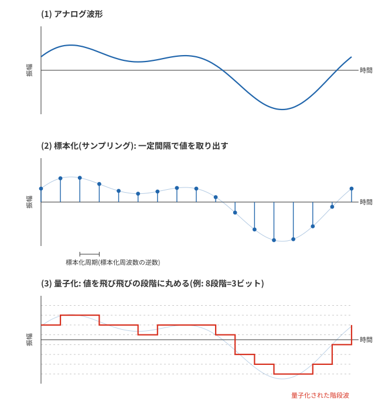
ここまでの内容を整理すると以下のようになります。
-
44.1kHz (44.1k回/秒)音をサンプリングする
-
サンプリングした音の大きさを16ビットで表現する
-
ステレオ音源なのでデジタル化する音波は2つ
CDの再生時間はベートーベンの第九が収まる長さとして74分が選ばれたといわれています。そこで、このCDにはどのくらいのデジタルデータが収められるのかを計算してみます。
毎秒必要なビット数は
44100/秒 × 16b × 2(ステレオ) = 1411200 b/秒
となります。よって、74分のデータ量を計算すると
(1411200 b/秒 × 74分 × 60秒/分) / (8b/B) ≈ 783MB ≈ 747MiB
となります。この領域をデータ用のCD-ROM(Mode 1)として記録した場合には、誤り訂正のためのデータ等で領域の約13%を消費するため、データ容量は約650MiBとなります。
|
標本化定理については、たくさんの文献がありますが、その中でも入手容易でわかりやすい文献を紹介しておきます（ただし、フーリエ変換等の数学にきちんと取り組む人向けです）。 [Web] やる夫で学ぶデジタル信号処理, 鏡慎吾, 2016 の「第10章サンプリング定理」に丁寧な解説があります。 |
画像ファイルのデータ量
スマートフォンで写真をとるとJPEGという圧縮方式で画像が圧縮・保存されます。JPEGによる圧縮は非可逆圧縮(lossy compression)であり、人間の目の特性を利用して元の画像情報のうち捨てても知覚しにくい情報を捨てて圧縮しています。撮影した画像によっても圧縮の度合いが異なります。
ここでは、画像は圧縮しないとどのくらいのデータ量になるのかを計算してみます。今、スマートフォンを開いて目についた写真を開いて情報を見てみると、サイズは
4608 × 3456 画素（約1600万画素）
でした。各々の画素は色を光の三原色、赤・緑・青（RGB）の混色で表現します。 JPEGでは各色は8ビット（28=256階調）で保存されます。つまり、1画素あたり8×3b=24b=3B のデータ量となります。よって、写真全体では
4608 × 3456 × 3B ≈ 47.8MB
のデータ量となります。写真ファイルの実際のサイズを見てみると 882kB でした。 圧縮比は以下の式で定義します。
圧縮比を計算してみると
47.8MB / 882kB ≈ 54
より、約54分の1に圧縮されていることになります。
| デバイス | 解像度 | 非圧縮サイズ | 一般的なJPEGサイズ | RAWファイルサイズ |
|---|---|---|---|---|
iPhone 17 Pro |
48MP (8064×6048) |
約146MB |
10-15MB |
75-80MB（ProRAW） |
Samsung Galaxy S26 Ultra |
200MP (16320×12240) |
約600MB |
20-30MB |
100-120MB |
Google Pixel 10 Pro |
50MP (8160×6120) |
約150MB |
12-20MB |
70-80MB |
|
JPEGでは各色は、8ビット(256階調)で保存されます。しかし、最近のデジタルカメラのRAWデータでは各色を12～16bit(4096～65536階調)で記録しています。JPEGに変換する時点ですでに情報が削られています。最新のiPhone 17 ProやPixel 10などは、複数の画像を合成し、AI処理を施した高品質な写真を生成できます。これらの写真処理には大量の計算リソースが必要です。 |
動画のデータ量
動画は基本的に「一連の静止画像」と「音声」から構成されています。1秒間に表示する静止画（フレーム）の数をフレームレートと呼び、一般的な動画では24fps（frames per second）から60fpsが使われます。
無圧縮の動画データ量は非常に大きくなります。例えば、フルHD（1920×1080画素）の動画を30fpsで撮影した場合：
1920 × 1080 × 3B × 30fps = 約187MB/秒
10分間の無圧縮動画では約112GBという巨大なデータ量になります。そのため、実際の動画は高度な圧縮技術によって大幅に圧縮されています。
【通信速度の単位】
-
1秒間に1ビット(2進法で0または1を1つ)転送する速度を、1b/s または 1bps(1 bit per second) と表記します。
-
1秒間に1バイト(2進法で0または1を8つ)転送する速度を、1B/s と表記します。
-
データの転送速度には10進接頭辞のみを用います。
| 解像度 | 形式 | データレート | 10分間のサイズ |
|---|---|---|---|
480p (SD) |
H.264/MP4 |
約2Mbps |
約150MB |
1080p (Full HD) |
H.264/MP4 |
約8Mbps |
約600MB |
4K (UHD) |
H.265/HEVC |
約15-20Mbps |
約1-1.5GB |
8K |
H.265/HEVC |
約80-100Mbps |
約6-7.5GB |
4K RAW (映画撮影用) |
ProRes/REDCODE |
約100-500Mbps |
約7.5-40GB |
最新の動画圧縮コーデックであるH.265/HEVCは、同じ画質でH.264の約半分のデータ量で済むよう設計されています。さらに新しいAV1コーデックはH.265よりも30%程度効率的とされています。
データ圧縮については、今後の授業で触れます。
2.6. データの転送速度
さて、ここではCDプレイヤーで音楽を聴くにはどのくらいの速度でデータを読み込まなくてはいけないか考えてみます。この値はすでに先程計算した 1411200 b/秒 です。通信速度には (b/秒) の表記の代わりに bps (bit per second) の表記を用います。つまり、CDプレイヤーでは約1.4Mbps のデータ読み取り速度が要求されます。
一概に速度といっても、装置そのものが本来もっているデータを読み書きする速度と、装置をつなぐコネクタやケーブルのもつデータ転送速度などでは性質が異なります。実際のデータ転送速度は、これらの複合的な要因によって決まります。いくら読み書きが速い記憶装置をもっていても、そのデータを送信する通信方式やケーブルの転送速度の上限が低ければ、それらの要因がボトルネックになって装置そのものの性能は発揮できません。
たとえば、インターネット上でファイルのデータを送信する場合には、誤り訂正のための冗長データや、送信先などの付加情報が加わりますので、少なくとも20%〜30%程度の速度低下は見込んでおいたほうがよいでしょう。
以下の表に状況に応じたデータ転送速度の目安を示します。
| データ転送速度 | 音質・画質・用途 |
|---|---|
8kbps |
携帯電話の通話音声 |
64kbps |
固定電話の通話音声(G.711) |
200kbps |
LINEの音声通話推奨値 |
600kbps |
Zoomで授業参加する際の推奨値(上り) |
1Mbps |
LINEのビデオ通話推奨値 |
1.2Mbps |
Zoomで授業参加する際の推奨値(下り) |
1-2Mbps |
Microsoft Teamsのビデオ通話推奨値 |
4-6Mbps |
YouTube 1080p の動画 |
15Mbps |
地デジ放送ハイビジョン |
15-25Mbps |
Netflix 4K HDR動画 |
35-50Mbps |
クラウドゲーミング（Xbox Cloud Gaming, GeForce NOW等） |
35-100Mbps |
8K動画ストリーミング |
最新の音楽配信とストリーミング
現代では音楽CDよりも、ストリーミングサービスや音楽ダウンロードの方が主流になっています。これらのサービスでは、データ圧縮技術を用いて、CDの非圧縮形式よりも小さなデータ量で音楽を配信しています。
| 形式 | ビットレート | 特徴 |
|---|---|---|
MP3（低品質） |
128kbps |
一般的なストリーミング品質、約11倍圧縮 |
MP3（高品質） |
320kbps |
高品質ダウンロード、約4.4倍圧縮 |
AAC |
256kbps |
Apple MusicやiTunesの標準、MP3より効率的 |
FLAC |
可変（約1000kbps） |
ロスレス圧縮、CDと同等の音質、約1.4倍圧縮 |
MQA |
可変 |
ハイレゾ音源の圧縮規格（開発元は2023年に事業譲渡） |
ハイレゾ音源 |
2.8-5.6MHz(DSD), 24bit/96-192kHz(PCM) |
CDを超える高品質、大容量 |
例えば、3分間の楽曲をCDと同じ品質で記録すると、約30MBのデータ量が必要になりますが、MP3(128kbps)では約3MBまで圧縮できます。
記憶装置のデータ転送速度
次に記憶装置のデータ転送速度について、以下の表に示します。この値は、記憶装置が持っている読み書きの速度特性(一般に読み込みの方が高速)と、記憶装置を接続する規格によって決まる速度の両方の要因が関わっています。
HDD(Hard Disk Drive)は磁気を記録する磁気ディスク(プラッタ)をモーターで回転させてデータを読み書きしますので速度は物理的な制約を受けます。また、プラッタの連続した領域にあるデータを読み書きする場合と、様々な位置にあるデータを読み書きする場合では速度が大きく異なります。
近年補助記憶装置として普及しているSSD(Solid State Drive)は半導体メモリを従来のHDDのように用いる装置で、いわゆるUSBメモリと同じフラッシュメモリの技術が用いられており、電源がなくても記憶内容が保持されます。HDDやSSD、USBメモリのように電源がなくてもデータが保持される記憶装置を不揮発性メモリと呼びます。
メモリの転送速度をメモリバンド幅といい、一般に単位はバイトを用いて B/s により表現します。他のビットによる速度単位(bps)と単位を揃えて比較してみてください。これらの値は環境等によっても大きく変わるため参考値です。
| データ転送速度 | 媒体 |
|---|---|
200MB/s |
補助記憶装置: HDD (連続領域のアクセス SATA3.0) |
約500–560MB/s |
補助記憶装置: SSD (SATA3.0、シーケンシャル読み出しの製品例) |
3-3.5GB/s |
補助記憶装置: M.2 SSD (PCIe3.0接続NVMe) |
5-7GB/s |
補助記憶装置: M.2 SSD (PCIe4.0接続NVMe) |
12-14GB/s |
補助記憶装置: M.2 SSD (PCIe5.0接続NVMe) |
25-28GB/s |
主記憶装置: SDRAM DIMM DDR4-3200 |
38-45GB/s |
主記憶装置: SDRAM DIMM DDR5-4800 |
57.6GB/s |
主記憶装置: SDRAM DIMM DDR5-7200 |
表の主記憶装置の値は1チャネルあたりの理論帯域で、メモリを2枚並列に使うデュアルチャネル構成では約2倍（DDR5-7200では約115GB/s）になります。上の表のSATA3.0やPCIe5.0などは、パソコンに記憶装置を接続するためのインターフェースの規格(機器同士を接続して信号を伝える際の接続方法や送信方法のきまり)であり、読み書きが高速なSSDでは、この部分の規格によってSSDの転送速度の上限が決まってしまいます。
また、SDRAMはコンピューターの主記憶に用いられるメモリであるRAMの方式のひとつです。
-
RAM (Random Access Memory): 読み書き可能な揮発性メモリで、電源を切るとデータが失われます。コンピューターの作業用メモリとして使われます。磁気テープのような先頭から順にデータを読み取る記憶装置と異なり、メモリ内部のどこにデータがあっても同等の時間でアクセスできることから、この名称があります。
-
ROM (Read Only Memory): 読み取り専用の不揮発性メモリで、電源を切ってもデータが保持されます。コンピューターの起動に必要な基本的なプログラムを格納するのに使われます。
無線通信のデータ転送速度
次は無線LAN通信およびスマートフォンの規格として示されている転送速度です。実際には環境や転送内容により大きく異なります。
| データ転送速度 | 媒体 | 電波帯 |
|---|---|---|
11Mbps |
Wi-Fi (IEEE 802.11b) |
2.4GHz |
54Mbps |
Wi-Fi (IEEE 802.11g) |
2.4GHz |
54Mbps |
Wi-Fi (IEEE 802.11a) |
5GHz |
600Mbps |
Wi-Fi4 (IEEE 802.11n) |
2.4GHz / 5GHz |
6.9Gbps |
Wi-Fi5 (IEEE 802.11ac) |
5GHz |
9.6Gbps |
Wi-Fi6 (IEEE 802.11ax) |
2.4GHz / 5GHz |
9.6Gbps |
Wi-Fi6E (IEEE 802.11ax) |
2.4GHz / 5GHz / 6GHz |
最大46Gbps (実効5-30Gbps) |
Wi-Fi7 (IEEE 802.11be) |
2.4GHz / 5GHz / 6GHz |
1Gbps |
4Gスマホ(下り) 高速移動時には最大100Mbps |
3.6GHz以下 |
10Gbps |
5Gスマホ(下り) 国内の理論値は最大約4.9Gbps |
3.7GHz / 4.5GHz / 28GHz |
1-3Gbps |
光ファイバー通信（一般家庭向け） |
N/A（有線） |
400Gbps-1.6Tbps |
光ファイバー通信（バックボーン） |
N/A（有線） |
無線LAN通信で最もよく使われる電波帯は2.4GHzと5GHz帯です。室内では2.4GHzの方が5GHzより障害物につよい反面、通信速度は落ちます。電子レンジも2.4GHz帯の電波を使うため、電子レンジのまわりでは通信速度が落ちます。非常に多くの機器で使われている電波帯のため、電波干渉を受けやすいという問題もあります。
スマートフォンの4Gや5GのGはギガではなく、世代を表すGenerationの略です。また、「下り」とは受信するときの通信速度を表します。一般利用者の利用形態は、コンテンツの視聴がほとんどであるため「下り」の方が高速になるようにサービス設計されています。
接続規格のデータ転送速度
次の表はUSBなどのコンピューターと周辺機器をつなぐための規格です。USB(Universal Serial Bus)は、コンピューターと周辺機器の間の通信をするためのケーブル、コネクタ、通信方法(プロトコル)に関する規格です。USBフラッシュメモリがあまりに普及したために、USBフラッシュメモリ(USB flash drive)のことを単に「USB」と呼ぶことがありますが、少なくとも「USBメモリ」と呼びましょう。Mac などで広くつかわれている USB Type-C はコネクタの規格です。USBと一口にいっても、通信の規格とコネクタ形状の2つの対象を指すことがあり混乱しやすいので注意してください。
| データ転送速度 | 規格 |
|---|---|
480Mbps |
USB 2.0 (High Speed) |
5Gbps |
USB 3.2 Gen1 (=USB 3.0) SuperSpeed (SS) |
10Gbps |
USB 3.2 Gen2 (=USB 3.1) SuperSpeedPlus (SS+) |
20Gbps |
USB 3.2 Gen2×2 (=USB 3.2) SuperSpeedPlus (SS+) |
10Gbps |
USB4 Gen2×1 |
20Gbps |
USB4 Gen2×2 |
20Gbps |
USB4 Gen3×1 |
40Gbps |
USB4 Gen3×2 |
80Gbps |
USB4 Version 2.0 |
22Gbps |
Thunderbolt 3 (映像用帯域とあわせて40Gbps) |
32Gbps |
Thunderbolt 4 (映像用帯域とあわせて40Gbps) |
80Gbps |
Thunderbolt 5 (映像用帯域とあわせて120Gbps) |
USBは見た目が同じでも規格の異なるケーブルがありますし、コネクタも度々変わるのでとても混乱します。また、同じ形状のコネクタを持つケーブルでも特性が異なりますので、購入するときは対応しているUSBの規格を確認する必要があります。
| コネクタ | 対応規格 |
|---|---|
USB Type A 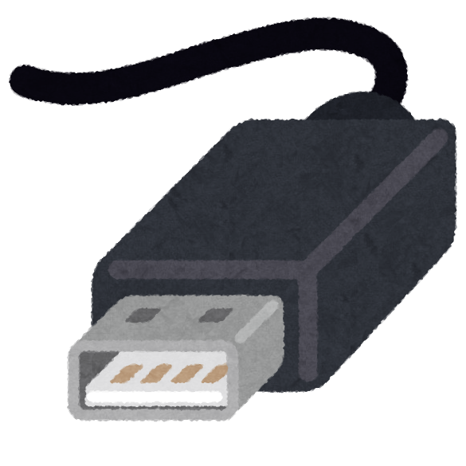 |
|
USB Type B 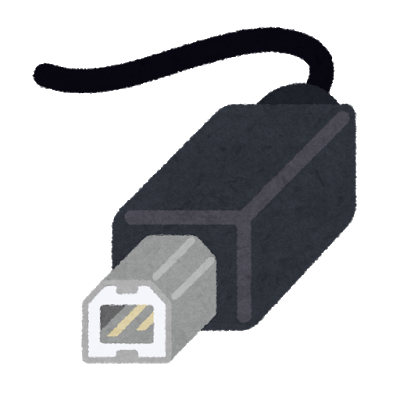 |
|
USB Mini A 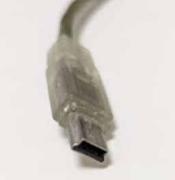 |
|
USB Mini B 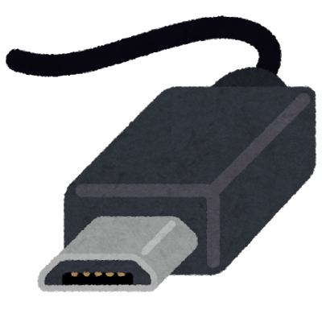 |
|
USB Micro B 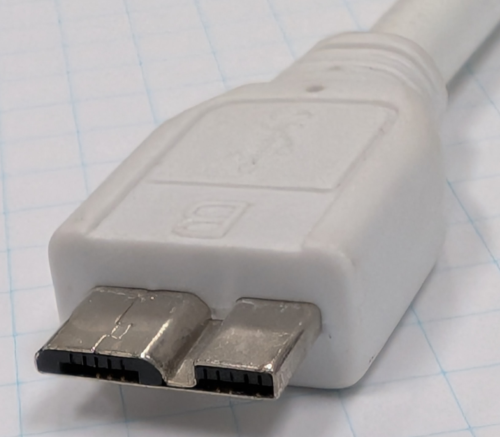 |
|
USB Type C 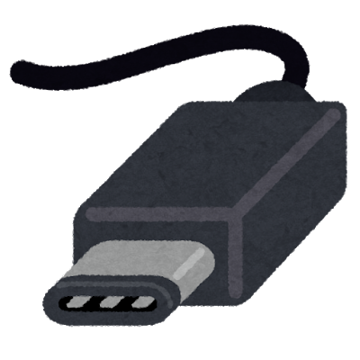 |
|
USBにはコネクタ形状と通信の規格の他に、電源規格もあります。対応する機器および充電器間のネゴシエーションによって、給電される電力が決まります。ケーブルだけでなく充電器や電源アダプターがもつ給電能力と、接続機器の消費電力を計算してから使うようにしてください。夜にスマートフォンに接続した場合などに、急速充電による発熱を抑えてバッテリー寿命を上げるために、あえて急速充電をしないモードになる仕組みもあります。
3. USB PDの電源ネゴシエーションと安全性
USB PD(Power Delivery)は、USB接続を通じて最大240Wまでの電力供給を可能にする規格です。USB Type-CでPDを使わない給電(5V/最大3A)よりもはるかに高い電力を安全に供給するため、複雑な仕組みが導入されています。
3.1. 電圧・電流・電力の基礎
USB PDの仕組みを理解するために、電気に関する基本的な単位の関係を整理しておきます。
-
電圧（voltage, \(V\)）：電気を押し出す「圧力」にあたる量。単位はボルト(V)。USBの電源規格では 5V、9V、15V、20V、28V、36V、48V などの値が使われます。
-
電流（current, \(I\)）：導線の中を1秒間に流れる電気の「量」。単位はアンペア(A)。
-
電力（power, \(P\)）：単位時間あたりの電気的な仕事の大きさ。単位はワット(W)。
三者の間には次の関係があります。
例えば、20V / 3A の給電は 60W、20V / 5A の給電は 100W になります。同じ電力を流す場合でも、電圧を上げれば電流は小さくて済みます。これは高電力のUSB PDで電圧を上げる方式が採用されている理由にもなっています。100Wを5Vだけで流そうとすると20Aが必要になりますが、USB Type-Cコネクタやケーブルでそれだけの電流を安全に流すことは現実的ではありません(導線の発熱は電流の2乗に比例するため)。
ケーブルに流せる電流の上限は、導線の太さや素材、コネクタの接触抵抗によって決まります。そのため、USB PDでは電源側(Source)、受電側(Sink)、ケーブル(E-Marker内蔵のもの)の三者でネゴシエーションを行い、安全に供給できる電圧・電流を決める仕組みになっています。
3.2. 基本的な電力ネゴシエーションの仕組み
USB PDでは、電源側(Source)と受電側(Sink)の間で電力ネゴシエーションと呼ばれる通信が行われます。これは両デバイスが対話して最適な電圧と電流を決定するプロセスです。
-
機器の接続: デバイスが接続されると、最初は標準の5V/0.5Aで給電が始まります
-
能力の交換: 電源アダプターは対応可能な電圧・電流のプロファイルを機器に通知します
-
要求: 接続機器は必要な電圧・電流を要求します
-
合意: 双方が合意した電圧・電流で給電が行われます
-
継続監視: 接続中は継続的に状態を監視し、必要に応じて再調整します
このネゴシエーションは専用のPDコントローラーチップによって制御され、通常は数ミリ秒で完了します。例えば、ノートPCは起動時に高電力(65W〜100W)を要求し、バッテリー充電後は自動的に低電力モードに切り替わることがあります。
3.3. ケーブルの判定方法
USB PDでは、高電力を安全に供給するためにケーブルの性能も重要な要素となります。特に3Aを超える電流（最大5A）や、EPRによる20Vを超える電圧を扱うケーブルには、「E-Marker」(電子マーカー)と呼ばれる小型チップが内蔵されています。
E-Markerの役割:
-
ケーブル情報の保存: 以下の情報を保存しています
-
USBベンダーIDとプロダクトID
-
ケーブルの電流対応能力（3Aまたは5A）
-
データ転送速度の対応（USB 2.0、USB 3.2 Gen1/Gen2など）
-
ケーブルの長さと品質に関する情報
-
-
ケーブル検出プロセス:
-
電源側はまず「Discover Identity」コマンドをケーブルに送信します
-
ケーブル内のE-Markerチップが応答し、自身の性能情報を返します
-
電源側はこの情報を基に、提供可能な最大電力を判断します
-
例えば、3Aまでしか対応していないケーブルが接続された場合、電源側は自動的に電流を3Aに制限し、5Aを必要とする高電力プロファイル（20V/5A=100W）の提供を行いません。これにより、ケーブルの過熱や損傷を防止します。
|
E-MarkerのないUSB Type-CケーブルでのPD給電は、最大20V・3A（60W）までです。これを超える給電には、必要な電流・電圧に対応したE-Marker内蔵ケーブルを使います。たとえば20V・5A対応の従来の100Wケーブルでも、48Vまで使うEPRに対応しているとは限りません。 |
| 規格 | コネクタ | 電力 |
|---|---|---|
USB1.1-2.0 |
Type-A,B |
2.5W(0.5A,5V) |
USB3.0-3.1 |
Type-A,B |
4.5W(0.9A,5V) |
USB BC(Battery Charging) 1.2 |
Type-A、Micro-B等 |
7.5W(1.5A,5V) |
USB CC (Type-C Current) 1.2 |
Type-C |
15W(3A,5V) |
USB PD(Power Delivery) 3.0 |
Type-C |
USB4のケーブルは最大60W(3A, 5-20V) or 最大100W(5A, 5-20V) |
USB PD(Power Delivery) 3.1 |
Type-C |
最大240W(5A, 28V-36V-48V)対応 (ノートPCの高速充電などに対応) |
3.4. マルチポート充電器の動作と注意点
複数のUSBポートを持つ充電器では、全ポートの合計電力は充電器の定格を超えることができません。複数のデバイスを接続すると各ポートへの電力が自動的に再分配され、その際に全ポートへの給電が数秒間切れる（瞬断する）ことがあります。詳しい挙動と注意点は「マルチポート充電器の電力分配の詳しい挙動」で説明します。
3.5. USB PDの安全機能
USB PDは高電力を扱うため、様々な安全機能が組み込まれています：
-
過電圧保護（OVP）: 電圧が規定値を超えた場合に電源を遮断
-
過電流保護（OCP）: 電流が規定値を超えた場合に電源を制限
-
過熱保護（OTP）: 温度が安全範囲を超えた場合に電力を低減または遮断
これらの保護機能は、ケーブルやコネクタの損傷、不適切な使用による事故を防止するために重要です。
3.6. 実際の使用における注意点
USB PD対応機器を安全に使用するためには、以下の点に注意してください。
| 注意点 | 説明 |
|---|---|
ケーブルの品質 |
USB PDで高電力を転送するには認証済みの高品質ケーブルが必要です。 必要な電力に対応するUSB-IF認証ケーブルを選び、60W・240Wなどの電力表示を確認しましょう。「USB PD対応」という表記だけではUSB-IF認証を意味しません。 安価な非認証ケーブルでは電力制限や過熱、最悪の場合火災の危険があります。 |
マルチポートアダプター |
合計電力はアダプターの定格を超えません。詳しい挙動はSection 3.8を参照してください。 |
互換性の問題 |
互換性のないデバイスとアダプターの組み合わせでは、機器の損傷を防ぐために通常は5Vの標準モードに落ちます。 |
過熱の危険性 |
非認証品や破損したケーブル・アダプターを使用すると、過熱や電気的障害を引き起こす可能性があります。 |
急速充電の制限 |
同時に複数のデバイスを急速充電することはできません。電力は各ポートに分配されます。 |
|
非認証のUSB-C PDケーブルやアダプターを使用すると、以下のリスクがあります。
特に100W以上の高電力を扱う場合は、必ず信頼できるメーカーの認証済み製品を使用してください。 |
3.7. コラム: 「100円ショップのケーブルなら充電しても安全」は本当か？
「外出先でUSB充電するとデータを取られる可能性があるので、100円ショップで買ったケーブルを使えば安全」といった説明を目にすることがあります。これは一見もっともらしいのですが、通信面でも物理面でも必ずしも正しくありません。むしろ二重に危険な側面があります。
誤解 1: 100円ショップのケーブルは充電専用とは限らない
ダイソーやセリアなどで販売されている 110円〜330円のUSBケーブルのほとんどは、商品名に「充電・転送ケーブル」「充電通信ケーブル」と書かれているとおり、USB 2.0規格の最大480Mbps でデータ通信にも対応しています。330円のUSB 3.0対応 Type-C to Type-Cケーブル(最大5Gbps)も販売されており、これは普通にデータ転送できるケーブルです。
本来の「充電専用ケーブル」は、データ線(D+/D-)が物理的に配線されておらず、電源線のみが繋がっている製品です。これは別商品として存在しますが、100円ショップで常に見つかるとは限らず、パッケージに「充電専用」「データ通信不可」と明記されているかを確認する必要があります。見分けずに「安物なら通信しないだろう」と思い込むと、データ保護の意図は達成できません。
誤解 2: 「ジュースジャッキング対策」としてケーブルを選ぶのは的外れ
公共のUSBポートに細工して、接続した端末にマルウェアを送り込んだり、データを抜き出したりする攻撃はジュースジャッキング(juice jacking) と呼ばれています。2011年にセキュリティジャーナリストのブライアン・クレブスが提唱した概念で、FBI(2023年、デンバー支局)、FCC(米連邦通信委員会)、TSA(米運輸保安庁、2025年)などが繰り返し警告を出しています。
ここで区別しておきたいのは、「USB接続を経由してマルウェアに感染する」ことと「公共の充電ポートから感染する」ことは別の話だという点です。前者には実害の記録が数多くあります。
-
Stuxnet(2010年発覚): インターネットから物理的に切り離された(エアギャップ)イランのウラン濃縮施設に、USBメモリ経由で侵入し、約1,000台の遠心分離機を破壊した。
-
Agent.btz(2008年): 中東の米軍基地でUSBメモリを挿したことを起点に米中央軍のネットワークへ拡散し、機密系を含む約30万台に感染したとされる。米国防総省はこの事件を受けて一時期USBメモリの使用を全面禁止した。
-
FIN7によるBadUSB郵送(2021〜2022年): 攻撃者がAmazonや米保健福祉省を装った小包で細工済みUSBデバイスを企業に郵送。挿すとUSBキーボードとして振る舞い、キー入力を自動で送り込んでランサムウェア(BlackMatter、REvil)を導入した。FBIが2022年に注意喚起している。
-
国内でもIPA(情報処理推進機構)が2007年の時点で、ネットカフェなど公共のPCに挿したUSBメモリを媒介とするウイルス感染の相談が多いとして注意を呼びかけており、その後も外部媒体経由の感染は定番の侵入経路として扱われています。
つまり「素性の知れないUSB機器を挿す」という行為そのものは、実績のある攻撃経路です。
一方で、公共の充電ステーションで一般利用者が実際に被害に遭ったと確認できる公開事例は、現時点では見当たりません。上記の政府機関の警告も、具体的な被害届ではなく「技術的に可能である」という前提に立ったものです。これは現在のスマートフォンOSに次の防御機構があるためだと説明されてきました。
-
iOS: USB接続時に「このコンピュータを信頼しますか？」のダイアログが表示され、ユーザーが「信頼する」を選ばない限りデータ通信は行われません。iOS 11.4.1(2018年7月)以降は画面ロックから一定時間経過すると「USB制限モード」に入り、充電以外のUSB通信を遮断する仕組みもあります。
-
Android: USB接続時のデフォルトは「充電のみ(データ転送なし)」で、ユーザーが通知から「ファイル転送(MTP)」を明示的に選ばない限りファイルにはアクセスできません。
ただし、ここから「だから安全だ」と結論するのは早計です。
「報告がない」は「起きていない」の証明ではありません。 標的を絞って行われた攻撃は被害者本人が気づかないことが多く、気づいたとしても公表されるとは限りません。公開情報の欠如は、リスクの不在ではなく「確認されていない」という状態を示すにすぎません。
許可ダイアログは絶対の防壁でもありません。 2025年、オーストリアのグラーツ工科大学の研究チームは USENIX Security で ChoiceJacking という手法を発表しました。悪意ある充電器がUSBキーボードとしても振る舞い、許可ダイアログが表示された瞬間に自分で「許可」を押してしまう、というものです。所要時間は約133ミリ秒で、利用者は画面に触れていません。評価したAndroid端末10機種のうち9機種と、iPhoneでも成立しました。Appleはこれを受けてiOS 18.4で、USBデータ通信を許可する際にPINや生体認証によるロック解除を要求するよう変更しています(Androidも15以降で同様の強化とロックダウンモードを提供)。逆にいえば、OSを更新していない端末ではダイアログによる防御は当てにできません。
本質的な対策は「ケーブルを安物にすること」ではありません。 OSを最新に保つこと、見知らぬ充電ポートで「信頼する」「許可する」を安易に押さないこと、そして可能なら公共USBポートではなくコンセントと自前のACアダプター、あるいはモバイルバッテリーを使うことです。
危険 1: 粗悪なケーブルはそれ自体が発火の原因になる
より現実的に注意すべきは、ケーブル自体の物理的な安全性です。国民生活センター、NITE(製品評価技術基盤機構)、各地の消防局などから、次のような事例が報告されています。
-
USBケーブルに本来使われるべきではない銅メッキ鉄線(導電率が銅の約15%しかない)が使われており、ACアダプターに挿したまま放置していたケーブルが異常発熱し、床面を焼損した火災事例(東大阪市消防局, 2019年頃)。
-
コネクター内部のピンが変形してショートし、電源に挿したまま放置していたケーブルと周辺が焼損した事例(NITE)。
-
コネクター部に汗や水が付着して電気分解が起こり、接触した皮膚に化学やけどを負った事例(NITE)。
安価なケーブルは 断線しやすい、絶縁体が薄い、導線が細すぎる/不適切な素材といった問題を抱えているものがあり、高電流が流れると発熱して最悪の場合発火します。「安いから通信できない」どころか、「安いから危ない」のです。
危険 2: 仕様を偽るUSB PDケーブルの存在
近年のUSB PDケーブル(E-Marker内蔵)では、パッケージ表記と実際の仕様が一致しない製品も指摘されています。たとえば2024年の調査報告では、ダイソーで販売されていた 330円のUSB 3.0ケーブルに、パッケージには「最大100W(20V/5A)」と記載されていながらE-Markerが「最大50V/5A=250W相当」を報告する個体があることが判明しました。対応する高電力アダプター(USB PD EPR対応機器)と組み合わせると、ケーブルの設計想定を超える電力が流れる可能性があり、発熱・発火のリスクがあります。
日本の法規制: PSEマーク
日本では電気用品安全法(PSE)により、ACアダプターは「特定電気用品」(ひし形のPSEマーク)、モバイルバッテリーは「電気用品」(丸形のPSEマーク)として、販売前の適合試験と表示が義務付けられています。ただしUSBケーブル単体はPSEの対象外であるため、認証なしの製品でも販売できます。そのため、ケーブルについてはUSB-IF(USB Implementers Forum)の認証ロゴ(SuperSpeed USBロゴ、Certified USBロゴなど)の有無や、メーカーの信頼性で判断するしかありません。
まとめ
-
「100円ショップのケーブル=通信できない=安全」という認識は誤り。ほとんどのケーブルは普通にデータ通信ができる。
-
USB経由のマルウェア感染そのものは、Stuxnetや郵送型BadUSBのように実害の記録がある。「公共の充電ポートからの被害」に限れば確認された公開事例は見当たらないが、それは「安全である」ことの証明ではない。
-
ジュースジャッキング対策として本当に効果的なのは、公共USBポートを避けて自前のACアダプター + コンセントで充電すること、OSを最新に保つこと、そして接続時のアクセス許可ダイアログを安易に承認しないこと。
-
ケーブル自体の安全性の観点では、認証された信頼できるブランドの製品を選ぶのが無難。特に60Wを超える給電では、必要な電力に対応するE-Marker内蔵ケーブルを選ぶ。USB-IF認証と電力表示を確認すると選びやすい。
-
安価なケーブルは「通信を遮断する」のではなく「断線・発熱・発火のリスクがある」と認識する。
3.8. マルチポート充電器の電力分配の詳しい挙動
USB PD対応のマルチポート充電器では、各ポートの出力電力の合計がアダプター本体の定格を超えることはできないという物理的な制約があります。
例として40WのUSB-C × 2ポート充電器を考えます。1台だけ機器を接続したときは、そのポートが最大40W(例: 20V/2A)を出力します。しかし途中で2台目の機器をつなぐと、充電器は次のような動作をします。
-
再ネゴシエーション: 合計電力が40Wを超えないよう、新しい電力配分を計算する(例: ポート1=25W、ポート2=15W)。
-
瞬断: いったん両ポートへの電力供給を停止し、各機器と改めてUSB PDネゴシエーションをやり直す(数百ミリ秒から数秒)。
-
給電再開: 新しい配分で各ポートに給電を再開する。
この「数秒の瞬断」は、スマートフォンやタブレットのようにバッテリーを内蔵している機器では特に問題になりません。しかしバッテリーを持たない機器(外付けSSD、バスパワーのUSBハブ、一部の周辺機器)では、予期しないシャットダウンやデータ損失の原因になることがあります。保存中のファイルが破損する危険性もあります。
また、多くのマルチポート充電器は各ポートの最大出力が非対称です。典型的な65Wの2ポート充電器の例:
-
ポート1(メインUSB-C): 単独接続時 最大65W、2台接続時 45W
-
ポート2(サブUSB-CまたはUSB-A): 最大18W、2台接続時も18W
ノートPCなど高電力が必要な機器を充電する場合は、どのポートがメイン(最大電力対応)かをパッケージや本体の表記で確認してから接続する必要があります。間違ったポートに挿すと、低電力モード(5V/3Aなど)でしか給電されず、ノートPCが「充電中」と認識していても実際にはバッテリー残量が減り続ける現象が起こります。
3.9. EU共通充電器指令
2022年、欧州連合（EU）は電子機器の共通充電ポートとしてUSB Type-Cを義務付ける法律を可決しました。この「共通充電器指令」は、電子廃棄物を削減し、消費者の利便性を高めることを目的としています。
-
2024年12月28日より、EU域内で販売される小型・中型電子機器（スマートフォン、タブレット、デジタルカメラ、ヘッドホン、ポータブルスピーカーなど）は充電ポートとしてUSB Type-Cの採用が義務付けられました。
-
2026年4月28日からはノートパソコンもこの要件の対象となります。
-
この規制をうけて、Apple社も長年使用してきた独自の「Lightning」コネクタを廃止し、iPhone 15シリーズ（2023年）以降でUSB Type-Cを採用しています。
国際的な標準化の動きは、消費者にとっては利便性向上と無駄なケーブルの削減につながりますが、技術革新の制限につながる可能性もあるという議論もあります。
4. 課題
-
本文中の問題1〜5に取り組んでください。問題1〜5の解答例は章末にあります。
5. 問題の解答
まず自分で解いてから読むことをすすめます。
この問題は、容量が大きくなるほど2進接頭辞による量と10進接頭辞による量の差が広がってゆくことを確認するのが目的です。1KiB と 1kB では、2.4%（24B）の差であったものが、1TiBと1TBでは約10%（約100GB）もの差が生じています。
Windowsで480GBと表示されているファイルのサイズは、480GiBであることから、
-
480GiB = 480 × 230 ≈ 515.4GB
つまり、500GBのHDDでは、約15GB容量が足らないことがわかる。
圧縮比の概算には大きな影響はありませんが、写真のサイズ表示が2進接頭辞か10進接頭辞かも確認して、計算するようにしてください。JPEGの圧縮比は画像や設定によって大きく異なります。
JPEG形式では原理的に色や輝度を256階調(8ビット)で記憶します。最近のカメラは4096から65536階調でまず写真をデータ化しています。その後に、JPEGの制約によって256まで階調を減らしています。
圧縮比はJPEGの場合、おおよそ数倍から数十倍の範囲になります。
バイトとビットの単位を揃えてください。間違わないように計算過程には必ず単位を付けてください。
まずは必要なデータを本章の表から再掲します。
| データ転送速度 | 媒体 |
|---|---|
200MB/s |
補助記憶装置: HDD (連続領域のアクセス SATA3.0) |
約500–560MB/s |
補助記憶装置: SSD (SATA3.0、シーケンシャル読み出しの製品例) |
-
平均100Mbpsのネットワーク回線の場合 5TB / 100Mbps ≈ 4.6日
-
HDD(SATA3.0)にデータをコピーする場合
-
自宅でHDDにコピーする時間は、5TB / 200MB/s ≈ 6.9時間
-
郵送に2日かかるとしても高々3日で送れる
-
つまり、HDDにコピーして郵送する方が若干速いということになります。実際、常時100Mbpsの速度でインターネット経由でデータを4日以上送り続けるという状況は、安定性の問題や回線専有の問題等からも現実的ではないように思います。
5TBのデータを数日中に誰かに送る場合は、HDDなどにコピーして送るのが現在でも現実的です。外部記憶装置はどんどん安価になっていて、6TBのSATA3.0接続のHDDであれば1万円程度で入手できます。しかし、容量の増加と値下がりに比べて、読み書きの速度はそれに見合うほどは早くなっていませんので、きちんと実質的な転送時間を見積もることが重要です。
また、この見積もりはあくまでも最良の場合を想定していることに注意をしてください。現実には、この見積もりの2倍以上の時間がかかることも多々あります。本章の前半で述べたとおり、インターネットでの通信では宛先や誤り訂正のためのデータが付加されます。また、インターネット回線は大勢の利用者で回線を共有していますので、他の利用者の影響を大きく受けます。よく、インターネット接続の広告にある「100Mbps(ベストエフォート)」や「100Mbps(最大速度)」といった表記は、信号が一切劣化しない回線を一人で専有するという稀な状況での理論上の最高値を示しているだけということも多く、実際にこの通りの性能がでることはほぼありません。
|
ハードディスク装置が一般家庭で購入可能なパソコンにも搭載されるようになったのは1980年代半ば頃からです。 この頃のハードディスク装置の価格は、10MBあたり10万円程度でした（5TB換算で、500億円！）。それから急速に容量が増え、安価になっていきます。 |
解答
(1) 1101(2) = 1×23 + 1×22 + 0×21 + 1×20 = 13
(2) 1101(2)=13(10) = D(16)
(3) 101011(2) = 0010 1011(2) = 2B(16)
(4) 1110010(2) = 0111 0010(2) = 72(16)
(5) 25 を商が 0 になるまで順に 2 で割り、得られた余りを下から順に並べる（下の表参照） → 11001(2)
(6) 25(10)=11001(2) = 0001 1001(2) = 19(16)
(7) 3C(16) = 0011 1100(2) = 00111100(2)
(8) 3×16 + 12 = 60
(9) 0.A(16) = 10 × 16-1 = 0.625
(10) 13.625(10) を2進法に変換する
・整数部：を商が 0 になるまで順に 2 で割り、得られた余りを下から順に並べる → 1101(2)
・小数部：
0.625 × 2 = 1.25 → 1（整数部分）
0.25 × 2 = 0.5 → 0
0.5 × 2 = 1.0 → 1
→ 小数部 = .101(2)
結果：1101.101(2)
(11) 13.625(10) を16進法に変換する
・整数部：13 → D(16)
・小数部：(10)より13.625の小数部分の2進表記は0.101(2)であり、4桁ごとに区切るために0を補うと 0.1010(2) = A(16) となる
結果：D.A(16)
(12) 2F.A(16) を2進法に変換する
・2(16) = 0010(2)、F(16) = 1111(2)、A(16) = 1010(2)
→ 2F.A(16) = 00101111.1010(2) → 101111.101(2)（前後の 0 は省略可）
結果：101111.101(2)
(13) 1110.101(2) を16進法に変換する
・2進数を4桁ごとに区切る: 1110.101 → 1110.1010（小数部に0を補う）
→ 整数部：1110(2) = E(16)
→ 小数部：1010(2) = A(16)
結果：E.A(16)
以上です